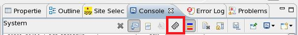

Printing tester status from system control
SmarTest Work Center provides a button to quickly retrieve tester status in the System console.
About this task
The Print Tester Status button lets you output the current settings of all instruments at any time.
Before you begin
Check that your SmarTest has a version no less than 7.5.2.
Make sure that your device works properly.
Procedure
-
In System console, click the
 Print Tester Status button from the toolbar:
Print Tester Status button from the toolbar:

Results
Tester status is printed to the system console for all sites, pins, instruments and with all properties.
Example
Below is a sample output in System console. The results are printed site by site. Within each site, properties are listed instrument by instrument (for example, CSAS, DPS128HC). Below a property name (for example Battery_Full), the property status is reported on all pins (for example LP2951_L4931_OUT, LM393_dps_pos).
site[1]
RELAY
CARD_RLY PIN_RLY
ENABLE OFF IDLE
L4931_RIPPLE OFF IDLE
LM393_dig OFF IDLE
LP2951_ERROR OFF IDLE
LP2951_SHUTDOWN OFF IDLE
SWITCH_2R OFF IDLE
SWITCH_R OFF IDLE
SWITCH_R/2 OFF IDLE
SWITCH_R/4 OFF IDLE
PE_Driver
V3H VIH VIL
ENABLE N.A. 2500 2250
L4931_RIPPLE N.A. 2500 2250
LM393_dig N.A. 2500 2250
LP2951_ERROR N.A. 2500 2250
LP2951_SHUTDOWN N.A. 2500 2250
SWITCH_2R N.A. 2500 2250
SWITCH_R N.A. 2500 2250
SWITCH_R/2 N.A. 2500 2250
SWITCH_R/4 N.A. 2500 2250
PE_Receiver
VOH VOL
ENABLE 2500 2250
L4931_RIPPLE 2500 2250
LM393_dig 2500 2250
LP2951_ERROR 2500 2250
LP2951_SHUTDOWN 2500 2250
SWITCH_2R 2500 2250
SWITCH_R 2500 2250
SWITCH_R/2 2500 2250
SWITCH_R/4 2500 2250
PE_Termination
term_h_range term_l_range term_mode term_p1 term_p2 term_p3 term_pulldown
ENABLE OFF N.A.
L4931_RIPPLE OFF N.A.
LM393_dig OFF N.A.
LP2951_ERROR OFF N.A.
LP2951_SHUTDOWN OFF N.A.
SWITCH_2R OFF N.A.
SWITCH_R OFF N.A.
SWITCH_R/2 OFF N.A.
SWITCH_R/4 OFF N.A.
What to do next
You can compare the last two printed testers status logs by clicking Diff Tester Status from the system console toolbar. See Comparing tester status from system console for details.
Functional changes
- Introduced in SmarTest 7.5.2